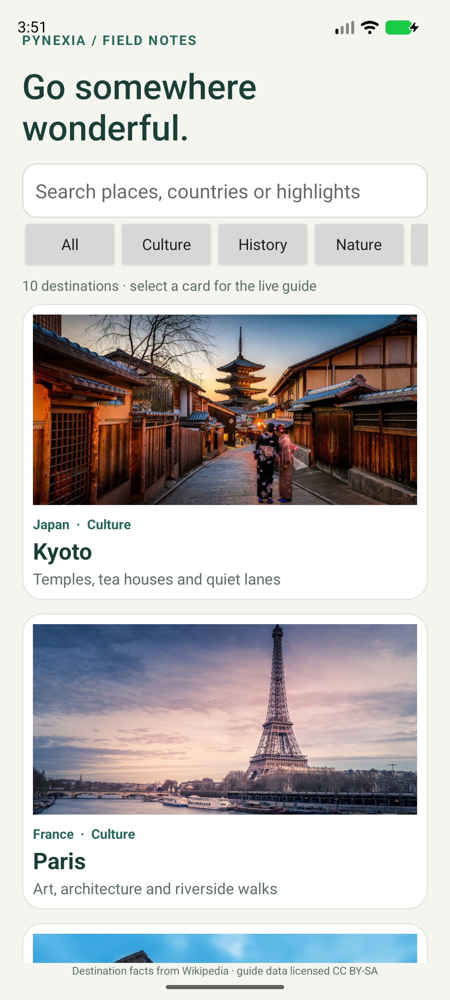
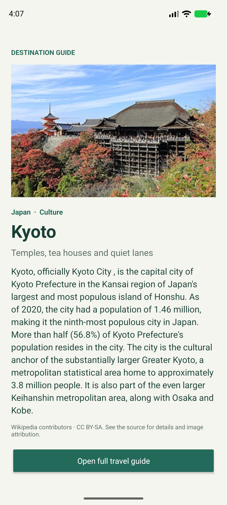

Native Android · Java + XML
Travel App
Go somewhere wonderful.
Explore curated destinations by search and category, view photo cards and load a destination guide with current Wikipedia summary data.
Project showcase · Android 8.0+ · Evaluation build.

01 / Implementation
Built around the assignment
Week 3: REST APIs, JSON parsing, asynchronous networking and native Android screens.
Read the bilingual report (PDF)Destination discovery
Search ten destinations by place, country or highlight and filter the list by culture, history, nature, coast or city.
Image cards and navigation
RecyclerView cards use Glide to load destination imagery and open a dedicated detail screen.
Live destination guide
Retrofit requests the Wikimedia page-summary REST endpoint for the current extract, thumbnail and source link.
02 / In the app
Actual Android screen



03 / Try it
Review walkthrough
- Browse the destination cards and category filters.
- Search a place, country or travel highlight.
- Tap a card to load its live destination summary.
- Open the Wikipedia travel guide for more details. A curated offline overview remains available if the service is unreachable.
Build status
Debug build completed
Automated tests were not run. See build and lint records in the repository.
شرح التمرين
يستعرض التطبيق عشر وجهات مع البحث بالاسم أو البلد أو أبرز النشاطات، والتصفية حسب الثقافة والتاريخ والطبيعة والساحل والمدينة. تعرض البطاقات الصور، وتحمّل صفحة التفاصيل نبذة حديثة من واجهة ويكيبيديا مع رابط المصدر.
04 / Submission kit
Files for your project form
Repository URL: https://github.com/ENGEyad/pynexia-week3-travel
Hosted URL: https://engeyad.github.io/pynexia-week3-travel/
Attach File / Archive: Travel-App.zip (832 characters of notes included below in the report)
Implementation notes
Native Android Travel App built with Java, XML, RecyclerView, Retrofit and Glide. Browse ten curated destinations and filter by culture, history, nature, coast or city. Search by destination, country or highlight. Select a card to load a live summary, image and source from the Wikimedia REST API. Open the full Wikipedia guide from the detail screen. Run the travel module in Android Studio with JDK 17/21 and Android SDK 35 on Android 8.0/API 26 or later. Internet access is needed for live summaries and images. Build: assembleDebug passed. Automated tests were not run. Lint findings are included in the repository and report. Guide data uses Wikimedia when available and otherwise shows a curated offline overview; card images are loaded from Unsplash. Hosted page includes the APK, source archive, report and screenshots.